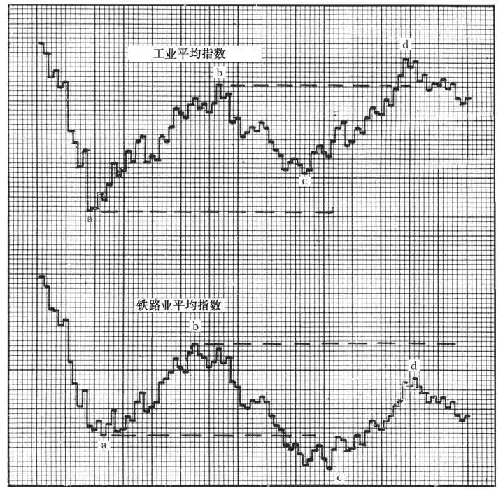

第3章 道氏理论
道氏理论是所有技术派市场研究的老祖宗。即便如此，仍有人不时批评它，称其“后知后觉”，也有人对它冷嘲热讽，特别是在刚进入熊市的时候。对股市稍有接触的人都知道道氏理论，它也受到了大多数人的尊重。那些或多或少受道氏理论影响的投资者从未意识到道氏其实是纯“技术派”。道氏理论的基础是股市的运行（通过平均指数来体现），而不是基本面分析师赖以决策的公司数据。
道氏理论的创始人查尔斯·亨利·道（Charles H.Dow）在其著作中多次表示自己的理论并非预测股市的工具，也不是投资者指南，而是整体经济的晴雨表。道氏创建了道琼斯财经资讯服务公司（Dow-Jones Financial News Service），并因发明了股市平均指数而广受赞誉。他在《华尔街日报》的评论中总结了平均指数理论的基本原则。1902年道氏去世，他的继任编辑威廉·彼得·汉密尔顿（William P.Hamilton）接手了道氏原则的研究，并在长达27年之久的研究中对其进行了组织，形成了今天为大家所熟知的道氏理论。
在解释道氏理论之前，让我们先来看一看股票的平均指数。远在道氏之前，银行家和商人们就知道大多数股票会同涨同跌。逆势而动的股票是非常罕见的，即便有，也只能坚持几天或几周。牛市中，一些股票确实会领涨其他股票；熊市中，有些个股比大市跌得更快，另一些却相当抗跌。但无论如何，绝大多数证券仍趋向于同进同退，这种情况也会一直延续下去。
这个事实已经被普遍认知并彻底接受，由于近乎真理，其重要性反而被忽视了。从很多角度来看，道氏理论的重要性远超过本书所述。它强调了市场的整体趋势，是市场技术分析初学者的首选。
查尔斯·亨利·道被认为是第一个系统性地用多只代表性股票的平均价格来反映市场整体趋势（更准确地说是市场点位）的人。1897年1月，道氏在其市场趋势研究中确定了两个道琼斯平均指数，沿用至今。一个是道琼斯铁路业平均指数，仅代表20只铁路公司的股票，因为铁路公司是那个年代最主要的企业。另一个是道琼斯工业平均指数，代表当时所有其他的公司，一开始只有12只股票，1916年增加到20只，1928年10月1日增加到30只。
3.1 道琼斯平均指数
上述两个平均指数包含的股票不断变化更新，尽可能具有代表性。现在的30只工业股中仅有通用电气（General Electric）是最早的成分股，而且在1898年被剔除过一次。1929年，所有的公用事业类股票退出了工业平均指数，并组成了道琼斯公用事业平均指数，含有20只股票；1938年，该指数的成分股减少到15只。之后，20只铁路股、30只工业股、15只公用事业股被合并成了道琼斯股价综合平均指数。这些平均指数经历了数次调整，其计算方法的形成过程也非常有趣，有兴趣的读者可以参阅其他材料。编者按：请参阅附录B“资源”。请注意现在还有道琼斯股价综合平均指数的细分。但现在讨论的道氏理论不以公用事业平均指数和综合平均指数为基础，仅关注铁路业平均指数和工业平均指数。编者按：铁路业平均指数后来发展为运输业平均指数。
近些年来，道琼斯平均指数的点位会在盘中每个交易小时末和日末进行计算。编者按：现在是实时计算，数据可以通过互联网获取，每小时的数据会通过《华尔街日报》和其他行情系统显示。事实上，由于道琼斯平均指数已经实现实时计算，这是期权和期货交易的基础。《华尔街日报》每期还总结过去两三年各道琼斯平均指数的重要高点和低点及其日期。各大都市报纸均载有这些平均指数的每日收盘价。
3.2 基本信条
回到道氏理论，有如下基本信条。
（1）道琼斯平均指数反映了一切（除了不可抗力） 。因为平均指数反映了市场无数投资者的整体活动，包括最具先见之明、信息最灵通最全面的投资者。平均指数的每日波动体现了市场上的已知信息、可预见的事件、可以影响证券供求关系的情况。哪怕发生了不可预测的自然灾害，市场也会对可能引发的后果迅速做出反应。
（2）三种趋势 。市场，即股票的总体价格，在趋势中不断变化，而这些趋势中最重要的是长线趋势 （major trend或primary trend）。长线趋势一般持续一年以上，如果趋势向上，则市场上涨20%以上，如果向下，则下跌20%以上。长线趋势的运行受到反向中线趋势 （secondary trend）的影响——当长线趋势走得过头时，就会发生回调和修正（长线趋势中的波折和中线趋势都被认为是中线走势——后续章节中将讨论）。最后，中线趋势是由短暂趋势 （minor trend）或每日波动组成，但短暂趋势或每日波动都不是道氏理论的重点。
（3）长线趋势 。长线趋势（也称长期趋势）是指市场整体向上或向下运行，一般（并非总是）持续一年以上，甚至时间可能长达数年。只要每一波连续的上涨达到一个新的高度，且每一次回调的低点都高于前一次回调的低点，那么长线趋势就是向上。这就被称为牛市 （bull market）。反之，只要每一波下跌达到一个新的低点，且每次反弹的高点都低于前一次反弹的高点，那么长线趋势就是向下。这被称为熊市 （bear market）（牛市与熊市的说法经常被随意用来指市场中任何一次上涨或下调。而本书提及牛熊市时，仅指道氏理论中所指的长线趋势。）一般从理论上来说，真正的长期投资者唯一关心的是三大趋势中的长线趋势。因为长期投资者的目标是在确信牛市即将开始时尽可能早地购买股票并持有，直至有明显证据表明牛去熊来。他们并不在意这其中的中线趋势和短暂震荡。但是，短线投资者则对中期趋势也十分在意，因为这样也能获利，本书后文将讲到。
（4）中线趋势 。中线趋势（也称中期趋势）指逆长线趋势而动的重要调整。在牛市中，中线趋势表现为中期回调或修正，在熊市中则是中期反弹或修复。中线趋势一般持续3周到数月，通常不会更久。一般情况下，中线趋势会从长线趋势的前一高点的1/3～2/3处回调（或反弹）。比方说在牛市中，道琼斯工业平均指数稳步上涨了30点，那么接下来的中线趋势则可能使指数回调10～20点，直至下一次上攻形成。
但是，这个1/3～2/3调整法则并非绝对。大多数中线趋势调整幅度都符合这个法则。有些调整几乎达到50%，一般都不会低于1/3，但也有时候会完全抵消前期涨跌幅。
因此，我们有两个标准来识别中线趋势。如果长线趋势中某次调整时间超过3周，且调整幅度超过前一波行情净涨跌幅的1/3（从前一波中线趋势结束到这一波开始，忽略短暂震荡），则可被确认为中线趋势。尽管有这两个标准，及时识别并正确评估中线趋势仍是道氏理论中最大的难题。未来章节将详细讨论。
（5）短线趋势 。短线趋势（也称短期趋势）一般持续不到6天，极少会达到3周。道氏理论认为短线趋势本身并没有意义，但是，几个短线趋势合起来会形成一个中线趋势。中期调整，无论是中线趋势还是两波中线趋势之间的长线趋势波段，一般都由3个或以上的小波段组成。仅从每日波动得出的推断往往会误导投资者。短线趋势也是3种趋势中唯一一个可以被“操纵”的（现在，即便是短线趋势也不一定能被有效操纵）。长线趋势和中线趋势无法被操纵；哪怕美国财政部竭尽所有资源，也未必能操纵市场。
在阐述道氏理论的第6个信条之前，让我们用一个类比来进一步说明上述这三种趋势。股市的长线趋势就像是大海的潮汐。牛市如潮起，不停地冲向海岸，直至最高水位线。熊市则如潮退。潮起潮落之间，波浪翻滚，不断地冲击海岸又退去。潮起时，每一波海浪对海岸的冲击都比之前一波更远；潮落时，每一波离岸的海浪都比前一波退得更远。这些海浪就是中线趋势，至于是长线趋势还是中线趋势，则取决于它们的方向是否与潮汐的方向一致。汹涌的海面上还有各种微波、涟漪，它们就像是市场上的短线趋势和无关紧要的每日波动。潮汐、波浪和涟漪分别代表了市场的长线趋势、中线趋势和短线趋势。
潮汐、波浪和涟漪
如果没有潮汐表，人们可以通过在海滩上插木桩的方式来确定潮汐方向。海浪冲上沙滩后，在水位线的最高点插上一根木桩，如果下一波海浪超过了这根木桩，那么就是在涨潮；如果下一波海浪不能超过这根木桩，那就是在退潮。实际上，道氏理论就是通过类似的方法来判断股市趋势。
早在道氏理论成型初期，人们就开始用潮汐、波浪和涟漪的概念来类比该理论。道氏很有可能受到了海洋运动的启发，从而发展出了道氏理论，但我们要注意不要将两者进行简单比较，因为股市的起伏并不像海洋运动那样有规律。人们可以精确地预测潮汐的更替，但道氏理论无法提前预测出牛市或熊市的到来。关于这点，我们稍后可以展开讨论，但现在让我们看一下道氏理论余下的信条。
长线趋势的几个阶段
（6）牛市 。主升趋势通常（但并不一定）可以分为三个阶段。第一个阶段称为建仓期：此时有远见的投资者嗅到了经济向好的气息，逐步建仓。在这个阶段，公司财报毫无亮点，甚至一塌糊涂。普通民众对股市毫无兴趣，交投清淡，但随着市场的转暖，成交量开始增加。
随着公司业绩改善，营收持续增长，民众开始关注股市，第二个阶段开启。在这个阶段，市场稳步上涨，交投日益增长。技术派投资者看到了获利机会。
最后，市场进入第三个阶段。民众大批涌进股市，交易活动频繁。所有财报都释放出积极信号，股价飙升，媒体纷纷唱多市场，公司纷纷上市圈钱。在这个阶段，你的朋友或许会打电话向你咨询该买什么股票，却完全没意识到股市已经涨了两年，现在已经该问卖什么股票了。在牛市的最后这个阶段，投机猖獗，成交量持续放大，但股价跳水频繁出现，垃圾股被炒上了天，绩优股则大多落后大盘。
（7）熊市 。主跌趋势也通常（但并不一定）由三个阶段构成。第一个阶段是出货期，出现于上一轮牛市的末尾。在这个阶段，聪明的投资者察觉到企业营收高得不正常，于是加快出货。此时，交易量仍然很高，但随着每一轮价格上涨交易量逐渐减少。民众仍然热情高涨，但随着炒股获利越来越难，不少人开始感到沮丧。
第二个阶段是恐慌期。买盘越来越少，卖盘越来越急。股价几乎是垂直下跌，然而成交放出天量（其实结合实际的企业情况，股价通常超跌）。恐慌期过后，市场会经历较长时间的修复或横盘走势，然后第三个阶段开始了。
在第三个阶段，灰心的投资者开始抛售股票。他们有可能在恐慌期之前就持有股票，也有可能在恐慌期才买入，因为股价相比几个月之前已经很便宜了。消息面开始恶化。第三个阶段的下跌势头并没有之前那么猛烈，但由于一些投资者割肉抛售，筹集现金作为他用，整个市场会持续下跌。垃圾股泡沫彻底破灭，而绩优股的下跌则相对较慢，因为投资者往往更长期地持有绩优股。在熊市的最后这个阶段，上述问题集中爆发，市场价格已经反映出最差的预期，而熊市往往在利空“出尽”前就结束了。
上文我们对熊市划分出了三个阶段，如实描述了过去30年里历次大熊市的情况。但读者需要认识到：没有两次熊市或牛市是完全一样的。有些熊市和牛市可能会跳过某些阶段。历史上的几个主升趋势就是从第一阶段直接进入第三阶段，中间只经历了短暂的调整。有的熊市并没有经历明显的恐慌期，也有的熊市直接以恐慌期结束（如1939年4月结束的熊市）。长期趋势的各个阶段没有明确的时间长短，比如牛市的第三个阶段可能长达一年，也可能一两个月就结束。熊市的恐慌期通常是几周甚至几天就结束了，但1929～1932年的萧条中出现了至少5段明显的恐慌期。尽管如此，记住长线趋势的特征还是大有裨益的。如果你熟知牛市最后一个阶段的表现，就没那么容易被冲昏头脑了。
相互印证原则
（8）两个平均指数必须相互印证 。这是道氏理论所有原则中最常受到质疑也是最难以理解的一个原则。但是，这条原则经受了时间的考验。任何认真查阅过交易历史的人都不会否认它的有效性，而那些在实际操作中无视这一原则的投资者却常常后悔。这个原则的意思是：任何预示着趋势改变的有效信号都无法单独由某一个道琼斯平均指数发出。让我们来看图3-1的这个例子。我们假设此时熊市已经持续几个月了，在a点，市场开始中线反弹，道琼斯工业平均指数和铁路业平均指数同时上升至b点。之后，工业平均指数先降至c点（高于a点），后回升至d点（高于b点）。此时，工业平均指数就已经发出了趋势改变的“信号”。但如果再看一下铁路业平均指数这段时间的变化，我们就会发现该指数从b点降至c点（低于a点），之后从c点回升至d点（低于b点）。所以，铁路业平均指数至此都没有确认工业平均指数的“信号”，市场的长线趋势仍应判断为向下。仅当铁路业指数回升至b点之上时，我们才有一个确定的信号。但在此之前，工业平均指数很有可能无法持续上升，再次和铁路业指数一同回落。即使这种情况没有发生，我们也只能得出市场长线趋势不明的结论。
上述方法只是相互印证原则的一种应用方式。在c点，我们也可以认为工业平均指数没有确认铁路业平均指数的跌势，但这仅仅是现有趋势的持续和二次确认的问题。此外，两个指数不一定要在同一天相互印证。通常两个指数会同时上升或下降，但很多时候，一个指数会滞后于另一个指数数天、数周甚至一两个月。在这种情况下，投资者应该耐心等待，直至市场出现明确的方向。
（9）成交量验证趋势原则 。虽然许多人笃信这条原则，然而并不是所有人都理解它的内涵。实际上，这句话描绘的是当价格随着长线趋势变动时，交投趋于活跃的现象。也就是说，在牛市中，价格上升时成交量放大，价格回落时成交量缩小；而在熊市中，价格下降时成交量放大，价格回升时成交量缩小。在某种程度上，这条原则也适用于中期趋势，特别是在熊市开始中期反弹时，成交量可能随短期上涨而放大，随短期下跌而缩小。但是，这条原则也有特例。此外，仅看几天的成交量很难得到有用的结论。只有分析长时间的交易量变动，才能得出有意义的结论。在道氏理论中，有关市场趋势的决定性 信号最终都是通过分析价格变动得出的。交易量只作为附加证据来进一步验证趋势是否确立。（后面几章会展开讲成交量在技术分析中的运用。）
（10）“横盘”可以取代中线走势 。在道氏理论的用语中，“横盘”（line）指一个或一对道琼斯平均指数的小幅震荡走势，时间持续两或三周，有时甚至数月，此过程中价格在5%的范围内小幅波动。出现横盘时，意味着买盘和卖盘基本上势均力敌。当然，在这个价格区间内，最终要么卖盘耗尽、买家只有提高报价才能引出卖盘，要么买盘耗尽、卖家只有降低报价才能引出买盘。因此对于已经确定的横盘走势，价格上涨突破横盘上限就是看涨信号，价格下跌突破横盘下限就是看跌信号。一般说来，横盘的持续时间越长、价格区间越窄，其最终突破的技术意义就越大。

图3-1 这幅日线图说明一个平均指数有可能无法印证另一个平均指数的道氏信号。图中，收盘价由水平的短线表示，并通过纵线相连，从而更清晰地展现每日价格变化
横盘走势很常见，因此辨识横盘是道氏理论追随者的基本功。横盘可能出现在重要的顶部或底部，表明市场分别处于建仓或出货阶段，但更多时候，横盘是穿插在长期趋势发展过程中的休整或整固阶段。此时，横盘取代正常的中期走势。有时候，只有一个道琼斯平均指数走出横盘走势，而另一个道琼斯平均指数走出典型的中级调整走势。价格向上或向下突破横盘区域后，通常会沿同一方向继续运行，即市场追随看涨或看跌信号，形成新的一波行情，突破由前一波行情的高点或低点。横盘的突破方向无法预测。一般来说横盘的价格区间为5%，这只是经验之谈；有时价格的波动区间略大于5%，但只要成交集中、边界明确，就能确认为横盘走势。（本书后文将指出，道氏理论中的横盘与个股走势图上严格定义的箱体形态有很多相似点。）
（11）只使用收盘价 。道氏理论不关注盘中的最高价和最低价，而只考虑收盘价，即指数成分股当天最后成交价的平均值。前文已讨论过收盘价在投资者心理上的重要性，此处毋庸赘言，这是又一条经过时间考验的道氏法则。举例来说：假设长期升势中的一波中级上涨行情在某天上午11点达到顶峰，此时道琼斯工业平均指数为152.45点，之后回落收于150.70点，那么下一波上涨只有收于150.70点上方，才能表明长期升势不改，而先前的盘中高点152.42点不予考虑；反之，若下一波上涨达到了152.60点的盘中高点，但未能收于150.70点上方，则仍然不能确定长期升势将延续。
近年来，对于道琼斯平均指数需突破前期顶部或底部多少才能确认或重申市场趋势，市场人士提出了不同看法。道氏和汉密尔顿显然认为，收盘价只要突破了前期顶部或底部，就算只突破了0.01点，都是有效信号，但现在的一些评论人士认为起码要突破1个点。我们认为最初的观点最站得住脚，因为根据过往记录，对最初观点的任何修正都没有实际意义。下一章（第10版编者按：现纳入附录A）将以1946年6月的情况为例，证明正统的“任何突破都有效”法则不容置疑。
（12）在明确的趋势反转信号出现前，应认为趋势将持续 。道氏理论的这条原则大概比其他任何一条都受到了更多批评。但是，只要正确理解这条原则，就会发现它像前面所列的原则一样经得起实践检验。这条原则讲的其实是概率问题。它警告投资者不要过早改变仓位，不要在信号出现前过早行动。这条原则传达了这样一条经验：耐心等待趋势明朗再出手的投资者更有可能获利，不等走势明朗就过早出手者更有可能亏损。这些概率无法量化，并在不断变化。牛市迟早会见顶，熊市迟早会见底。当一对道琼斯平均指数首次确认新的长期趋势信号时，该趋势持续下去的概率最大，哪怕出现短期回调或扰动。但随着该长期趋势的持续，市场继续沿该趋势运行的概率逐渐变小。这样，后续再次确认牛市的信号（两个道琼斯平均指数都达到新的中级高点）技术意义越来越小。一轮牛市运行数月后，与长期升势首次得到确认时相比，买卖股票获利的空间变小了，因此投资者买入股票的兴趣也减弱了，但这第12条道氏信条告诉你要耐心地“持股待变”。
此信条导致的一个结果就是趋势反转可能发生在趋势确认后的任何时刻。这提醒投资者：在应用道氏理论时必须时刻关注市场动向。
编者按：道氏理论对于当今市场的重要性和将其发展成一套新综合市场理论的必要性
道氏理论确有许多值得推荐的优点。其中蕴含的理念直到今天依然有效，仍然是技术分析的基本思路。波浪、长期趋势、中期趋势、短期趋势等概念是对现实市场的忠实描述。道氏理论的其他内容也同样重要，比如价格反映一切信息、长期趋势有如潮汐（牛市有如潮起时水涨船高）、趋势倾向于继续。这些不是凭空想象出来的，而是基于对现实的观察。
除了依然可用于技术分析，道氏理论现在已被神化，被赋予了预测未来的功能。道氏和汉密尔顿当年将自己发明的市场指标视作宏观经济的晴雨表，其作为投资研判工具的作用是后来才被发现的。
我认为现在看来，道氏理论已不足以作为宏观经济的晴雨表或当今市场的投资工具。它只是在早期简单的市场环境中提出的一套简单理论。道氏理论追随者虽未明说但已承认：永远需要与时俱进地对道氏理论进行优化，比如加入道琼斯铁路业平均指数（现为道琼斯运输业平均指数）和道琼斯公用事业平均指数。在道氏和汉密尔顿的年代，30只股票也许足以反映美国经济的全貌。而现在美国经济已比当年复杂得多，所以没人会否认必须对道氏理论所用的简单指标进行修改。进入21世纪后，美国和全球经济需要比道琼斯平均指数更加复杂的经济指标。
所以，为了发挥旧道氏理论的功能，我们必须综合使用各种平均价格和指数来衡量市场。宏观经济更是如此。迈吉在本书中提出了一些很有价值的工具，特别是第38章中可用来衡量整个市场的“迈吉评价指数”（Magee Evaluative Index），其价值和效用远未被充分认识和发掘。
21世纪的市场运行状况远比迈吉所处的时代纷繁复杂。除了亘古不变的潮起潮落，还有无数暗流涌动。当道琼斯平均指数处于中期跌势时，涵盖更广的标准普尔500指数（Standard&Poor’s 500）也许正进军新高；而当这两套指数盘整时，纳斯达克指数（NASDAQ）可能早已一飞冲天。因此，只有将这三套指数纳入一个综合指数，才能反映市场整体的真实情况。此外，为了对市场进行透彻的分析，迈吉评价指数应与这三套指数配合使用。
按照道氏理论，只有当道琼斯铁路业平均指数和道琼斯工业平均指数相互印证，才能确认牛市或熊市信号。而在21世纪，同样只有当各种平均指数互为印证，我们才能看清市场的整体状况。
当上述三套指数呈现出同样趋势时，不管是上涨、下跌还是横盘，长线趋势都维持不变。若三者出现分歧，则显然市场表现参差，建议投资者根据经济的不确定性安排好仓位和组合品种。资本当然应流入回报率最高的领域。当纳斯达克指数牛气冲天时，有什么理由守着疲软的道琼斯平均指数不放？如果投资者遵循本书的理念，那么他不会被动地遭受连绵跌势的折磨。就算不直接做空，他至少也会对冲。（爱德华兹、迈吉和我都这样认为。）
第10版编者按：对爱德华兹所述道氏理论的评注
我们必须以正确的眼光看待爱德华兹对道氏理论的描述。当他谈到10～20个点的中期趋势或30个点的长期趋势时，我们应注意当时的市场整体规模远比现在的小。1929年的顶部约为386点，底部约为64点，所以10、20、30个点就构成了可观的涨跌幅比例。
同样，在今天的长线趋势中，20%的涨跌幅也很可观，但仍可能无法体现中短线的起伏波动。从2009年3月到2011年5月，道琼斯指数上涨了87%。